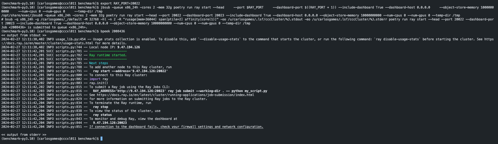
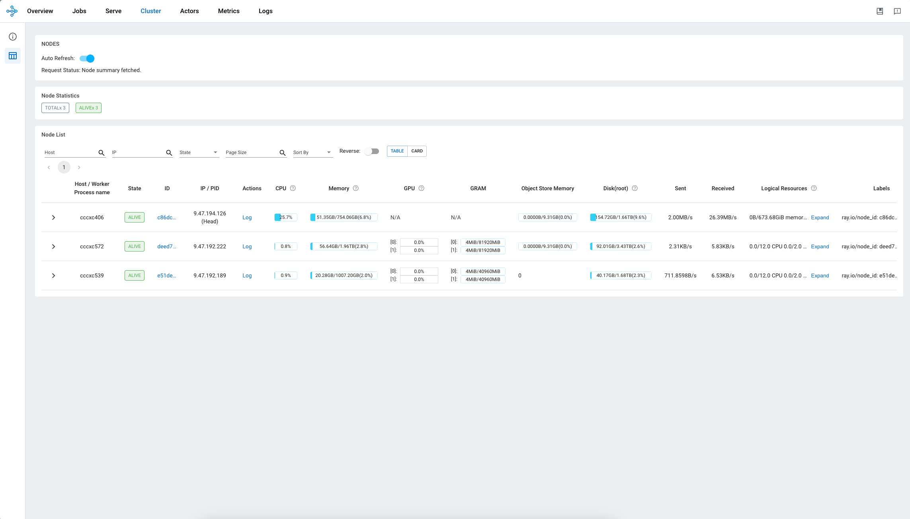

Parallelizing with ray¶
To parallelize with ray, some additional steps are necessary.
Instructions for CCC follow.
Warning
Running anything on a ray cluster is bound to bring about more cryptic messages and harder debugging. Please make sure your benchmark works for the single node case first,
Warning
This tool uses bayesian optimization, and will parallelize it over the number of GPUs provided. However, bayesian parallelization does not parallelize super well, so using a large number of GPUs is not reccomended.
With no HPO, this will parallelize over tasks.
With HPO, this will parallelize only within each task. Parallelizing within each task and across tasks seems quite challenging and is not currently officially supported by ray tune
Warning
It is unclear if pruning with ray parallelization works without saving models. You may need to have this enabled for correct results.
Set up a ray cluster¶
If on CCC, start a head node with:
export RAY_PORT=20022 # or any other port you like
export RAY_TMPDIR=/tmp/<your_tmp_dir> # replace this with a unique directory name for you. If another user specifies the same, you may get permission denied errors.
jbsub -queue x86_24h -cores 2 -mem 32g ray start --head --port $RAY_PORT --dashboard-port $((RAY_PORT + 1)) --include-dashboard True --dashboard-host 0.0.0.0 --object-store-memory 10000000000 --num-cpus 2 --num-gpus 0 --temp-dir $RAY_TMPDIR
Find out the address of your ray head with bpeek <ccc process number> and store it in an environment variable with
This will also tell you the url where you can check the ray cluster.

Then, launch your workers:
jbsub -queue <ccc_queue> -cores <nodes x (min 8 cpu per gpu) + gpu> -mem <mem> ./start_ray_workers.sh -a <ray_head_ip>:$RAY_PORT -e <conda env>
The -e option is required to activate the conda environment for the workers. If this is not passed, no conda env will be used, which may result in errors.
You may have to run chmod +x start_ray_workers.sh.
You can provide multiple nodes in the command above. Each GPU will be used to launch a task. For each GPU, make sure there are at least 8 CPUs cores.
At any time you may add more workers to the cluster which will be assigned trials to run.

Run the script¶
One additional requirement is the key ray_storage_path must be included for jobs launched with ray.
This key is ignored if ray is not being used. When ray is used, it determines where ray stores its files, including saved models.
You can now run ray job submit --no-wait --working-dir . -- ray_benchmark --tmp_dir $RAY_TMPDIR --config <your benchmark>.
You can then use ray job to interact with your job. See the ray quickstart guide for more examples.
More easily, you can use the ray dashboard and MLFlow to check your job.
terratorch_iterate.benchmark_ray.benchmark_backbone(defaults, tasks, experiment_name, storage_uri, tmp_dir=None, backbone_import=None, run_name=None, n_trials=1, ray_storage_path=None, optimization_space=None, save_models=False, run_id=None, description='No description provided', bayesian_search=True)
¶
Highest level function to benchmark a backbone using a ray cluster
Parameters:
| Name | Type | Description | Default |
|---|---|---|---|
tmp_dir
|
str
|
Path to temporary directory to be used for ray |
None
|
defaults
|
Defaults
|
Defaults that are set for all tasks |
required |
tasks
|
list[Task]
|
List of Tasks to benchmark over. Will be combined with defaults to get the final parameters of the task. |
required |
experiment_name
|
str
|
Name of the MLFlow experiment to be used. |
required |
storage_uri
|
str
|
Path to MLFlow storage location. |
required |
ray_storage_path
|
str | None
|
Path to storage of ray outputs, including saved models, when using ray tune. Required if optimization_space is specified |
None
|
backbone_import
|
str | None
|
Path to module that will be imported to register a potential new backbone. Defaults to None. |
None
|
run_name
|
str | None
|
Name of highest level mlflow run. Defaults to None. |
None
|
n_trials
|
int
|
Number of hyperparameter optimization trials to run. Defaults to 1. |
1
|
optimization_space
|
dict | None
|
Parameters to optimize over. Should be a dictionary (may be nested) of strings (parameter name) to list (discrete set of possibilities) or ParameterBounds, defining a range to optimize over. The structure should be the same as would be passed under tasks.terratorch_task. Defaults to None. |
None
|
save_models
|
bool
|
Whether to save the models. Defaults to False. |
False
|
run_id
|
str | None
|
id of existing mlflow run to use as top-level run. Useful to add more experiments to a previous benchmark run. Defaults to None. |
None
|
description
|
str
|
Optional description for mlflow parent run. |
'No description provided'
|
bayesian_search
|
bool
|
Whether to use bayesian optimization for the hyperparameter search. False uses random sampling. Defaults to True. |
True
|
Source code in terratorch_iterate/benchmark_ray.py
111 112 113 114 115 116 117 118 119 120 121 122 123 124 125 126 127 128 129 130 131 132 133 134 135 136 137 138 139 140 141 142 143 144 145 146 147 148 149 150 151 152 153 154 155 156 157 158 159 160 161 162 163 164 165 166 167 168 169 170 171 172 173 174 175 176 177 178 179 180 181 182 183 184 185 186 187 188 189 190 191 192 193 194 195 196 197 198 199 200 201 202 203 204 205 206 207 208 209 210 211 212 213 214 215 216 217 218 219 220 221 222 223 224 225 226 227 228 229 230 231 232 233 234 235 236 237 238 239 240 241 242 243 244 245 246 247 | |